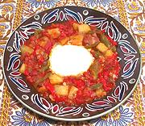

|
ChakchoukaTunisia - Chakchouka | ||||
| Serves: Effort: Sched: DoAhead: |
4 *** 1-1/4 hr Most |
Pronounced "ShaShouka" this is a dish of eggs poached over Vegi Sauté. Variations are made from Turkey to Morocco, but always with eggs over a base of Onions, Tomatoes and Peppers. | |||
| The Tunisian version features hot peppers. I sometimes make up a batch (including the optional potatoes and sausage) and refrigerate it. In the morning I heat some up in a pan and poach an egg over it for breakfast. | |||||
|
|
------ 1 8 2 12 2 1/2 1/4 ------ 2 1/4 1/2 1/4 ------ 4 ------ ------ 8 8 |
--- # oz cl oz t t --- T t t c --- --- --- oz oz |
-- Vegies Tomatoes Onions Garlic Bell Peppers (1) Red Chili (2) Caraway seed (3) Cumin seed -- Cooking Olive Oil Pepper, Black Salt Water -- Finish Eggs, large ------------------- -- Options Sausage (4) Potato (5) |
PREP - (25 min)
|